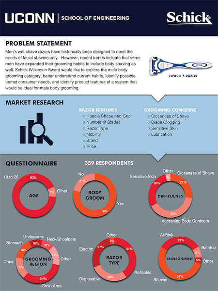

In the final year studying mechancial engineering, a student team including myself evaluated a problem and developed a solution for industry sponsor Schick-Wilkinson Sword over two semesters. In addition to applying skills gained through coursework, the team exercised principles of design, practiced ethical engineering decisions, and communicated and collaborated in a corporate environment. As the project took form, we kept in touch with industry and faculty mentors, held regular meetings, wrote formal documentation, and made presentations on work. In tackling Schick’s new venture, the team began with market research that included product-based information as well as direct consumer surveying. Based on information gathered, brainstorming and ideation produced a range of solutions, which were narrowed to those most viable based upon survey data, stress deformation and finite element analysis, and prototype functionality and practicality. Results were presented at the annual Senior Design Demonstration Day in Gampel Pavilion on the campus of the University of Connecticut.